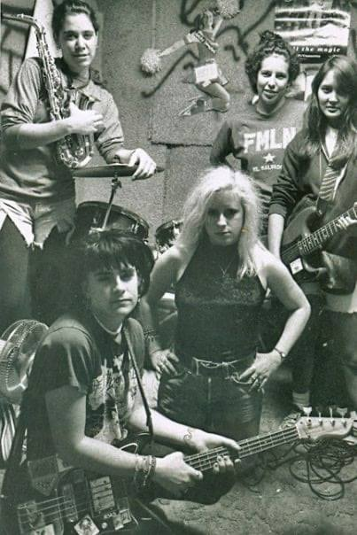
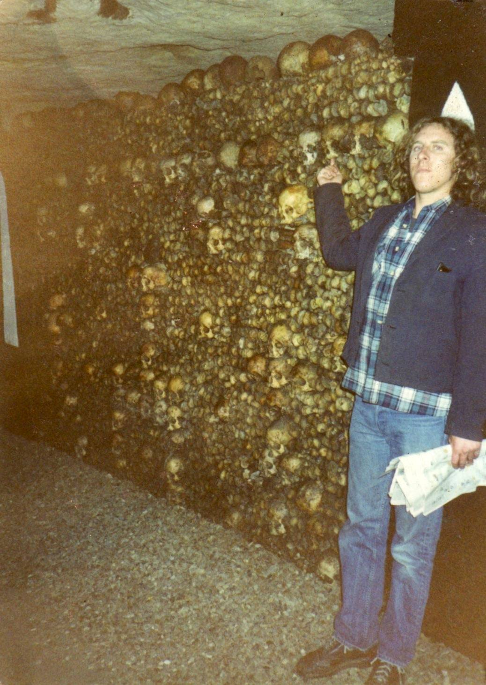
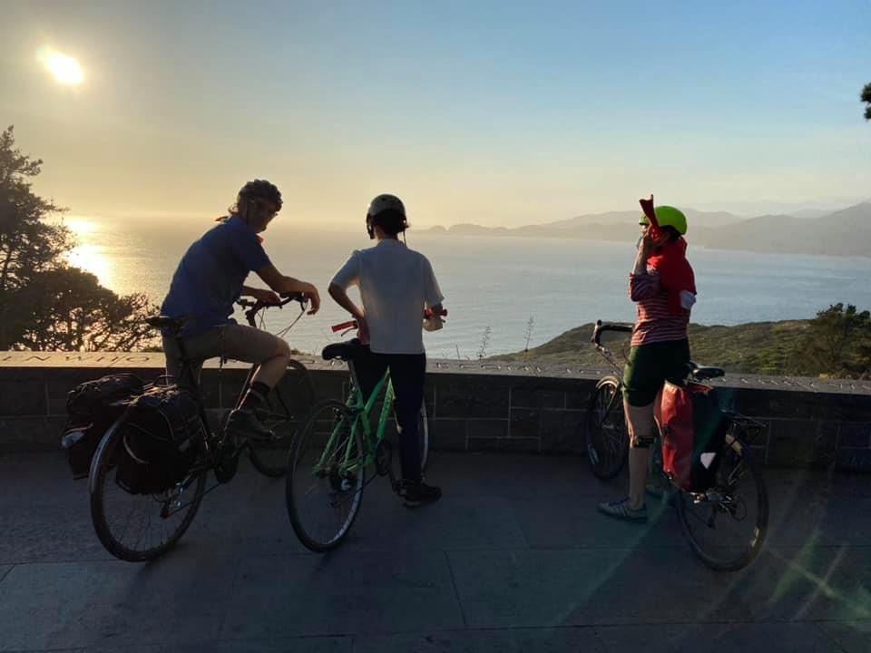

Shared Sept 12, 2020
Brian met with all of us individually and we all agreed to leave school and move to San Francisco to play music. That was the plan. For two years previous, we had traveled there and played shows there and we liked the music scene and also it seemed like a place where we could still be Isla Vistans and it would be accepted. A few weeks later, a couple people went up and secured a loft at 18th and Mission. It was a genius move because the house had no neighbors and we could play as loud as we wanted anytime. We were all white college kids and the block that we moved to was very different. There was a BART station at 16th, where we would all buy, every morning, our illegal bus tickets. At night, as we walked the streets, the people would say “what are you doing here?” I guess we started the gentrification of the Mission, as we were the first people like us there. [Others pointed out the Mission was always a diverse scene.]
It was Jim, Byram, snothead, Mike, me, Brian, Sabrina, Xenyasha, Todd, Annie to start. We all arrived one night and sat in the empty house and looked around and wondered what to do. We had no furniture and we had all just quit school and moved into this place. So, we ate some mushrooms and wandered out as a group. We walked up to a park above Haight Street and watched our new city in silence. We started to notice a few solo males walking around the park and we realized that we were in San Francisco and things were going to be different. We all laughed and headed home after an hour or so.
A week later we added some characters. Dee and Tree moved into our walk in closet. I could write a book about them, but Dee [Richie Detrick] was the Singer for the Nuns, a famous SF punk band and Tree was his wife and she worked at the time as a phone call sex worker, so we couldn’t use the phone late at night because she was working. At one point, she asked if I wanted to work as a gay male talking to guys and I said no. I liked them. Dee had played in the Nuns, Rank and File, and other bands and he was still trying to make it as a musician, so many nights I would hear him playing in the closet with other people. Two of them lived in our closet for two years. That is strange. But, he told me great stories about hanging around the Ramones and other early punk bands. Also, our room was near the closet so a bunch of rock people would visit and hang out in our room. Among others I remember Flipper being there all of the time, The Mentors, Alice Cooper band and others. It was daily the freaks that would come in and hang out. The worst was one morning a girl was knocking on my door and I opened it and she explained that she was in high school at Mission High and would it be OK to use my room to find a vein and get high before school. I said no and shut the door. What a nightmare.
A few weeks later, David Shiffman moved in with Garth. Dave was my best friend from high school years and Garth was a Trinidadian refugee who was beginning college and learning English who had met Snothead in a class. We had no room, so they built bunk beds over the washer and dryer and lived there for a year. So, within a month or so, we had a lot of people living there. Also, anyone who wanted to have a good time would drive from SB to our house to party and stay there. Many days when I went to the kitchen, there would be people sleeping on the floor. I was sharing a room with Lupro and we both liked the same music, so we had a record player that never stopped. Our practice room was next door so we could play anytime.
Next door to the house was a motel that was famous for prostitution. Our back yard was right below the windows and there were times that the tricks would get pushed out the window and land in our backyard. At times I would go out there for fresh air and the ladies would whistle at me and say, “You want a good time? We’re right here. And you boys look fine.” I was in a relationship with Andrea and it was a great time. We got to have our own lives and see each other on weekends. As far as music, it took us some time to get it going. We had some friends in a band called Cameltoe who were nice enough to loan their instruments to us one night and it was our first show up there.
But to be honest, at this point it wasn’t so much about the music. None of us had lived in a city like this before. One time Jeremy came up to visit and we came upon the police doing something and I wanted to react, and he said, “These guys have never dealt with crazy Isla Vistans who will fight them, so let’s just keep walking.” Tony lived up there and gave me the same advice. “When they are around, look at the ground.” And we were saved for a few months until one morning they all came to the house to ask questions. And everything started to change.
Sept 14
There were two bands from the time period that were composed of great female musicians. GOD and PMS. Forgive me if I don’t remember the exact details or if I use wrong pronouns or anything. GOD was fronted by two singers, Andrea and Theresa; they were the first rap sounding IV band that I had heard. They didn’t really sing, but they together belted out these raps about IV life while Karen Zapata drummed for both bands. They sang about daily stuff in IV and some cool political stuff. Songs about Rice and Beans and El Salvador and crazy stuff. The Capricho house was at Trigo and Madrid. We had two houses connected by a garage, which is where we built the practice space. Cactopus and GOD would practice in this small laundry room in the garage. I don’t know if PMS practiced there; Michael Larry would play drums all day in there. The front house had the Beverly Hills punks (Gooch and Erik) and Lupro and Larry. Every morning, Lupro would wake up and put on the Stones “Exile on Main Street” and the day would start. In the back house was Lisa, Deana, Tree, Laura, Sadie, me and Andrea. If I have forgotten anyone, sorry and let me know. There were a lot of people that passed through. Kitty lived in a van in the driveway and some persons lived in the garage. Over the fence was another house of my high school friends. When I was a freshman, they would come up to party and loved it and decided to get a house next to the Capricho House. This was Mario, Rico, Rodney and Scott. They were my best high school friends and they all passed away a few years ago.
Rodney’s death was in the news a few years ago as he was stricken by a disease which was thought to be eliminated — Meningitis. Except for Mario, the others went the route.
But back to the music, PMS was rocking all the way; Karla had a great voice and stage presence, Meilani was great at guitar, Karen and Beth kept the beat and Inga played the horn. I think they should have stayed together and would have been a big thing. Cactopus played many shows with both bands. Andrea was the only one who had a big car so we could all pack our gear in there and head to the show , so we almost always played together. After a few GOD shows, while I was in the audience, I realized that they were rapping and singing about me and looking at me. I shared a small room with the singers, so it made sense I guess. But it was cool to see friends singing about our daily things. I don’t think people gave enough credit to the IV music scene of these years. There was incredible creativity and rock and roll. I will go on later about how “Heedless Youth Traveling Through Life with the Throttle Wide Open” changed my whole views about music. Good Times. But GOD and PMS ruled the scene for a few years.

PMS - 1989
Sept 15
I have a bunch of things but I wanted to finish the Cactopus chapter. We moved up to San Francisco and began some recordings of singles and tapes, and mostly we just tuned up our sound. We had been pretty loose and dependent on the easiness of IV garage parties, but we had all quit school and moved in one weekend to San Francisco. We had to get better. First, to pay the rent, we had to get jobs. Brian worked as a city gardener, Jim was an administrator at a recycling plant, Lupro made sandwiches at a deli, Todd and Anni, I don’t know really. I think Anni was still becoming a teacher. I hung flyers everyday from doorknobs. My salary was 30 dollars cash every day. Byram worked at a gardening place, I don’t think Snothead or Zenyasha worked, but I could be totally wrong on any and all of this. Almost all of us got jobs at the San Fran metro commission tracking peoples driving habits by telemarketing. Strange job but it was money.
But it was the first time we had been out of the comfort of Isla Vista; there, we could always find a couch to sleep on and now we were in the city and without UCSB money, we had to get jobs to pay the rent. Fortunately, we had so many people packed into a small loft in a cheap part of town, that it was about 50 bucks a month.
Isla Vista Days
We had a couple of people that lived in our closet under the stairs. Dee and Tree; they had some habits that affected the house. They had many people visit and hang around. Zenyasha began going into the closet more than was expected, and she started to look different. She was missing practices and not interacting with us; we all still kept up any pretense we could of friendship and loyalty. We had to; it was the city and you needed people to be on your side and go out with you. At the time, every once in a while a really violent thing would happen or a robbery and it was totally different from streets filled with college kids. We were in the middle of a real city.
Things changed on a Saturday morning. I was out of town. Every other week I would take the greyhound bus to visit and stay with Andrea in Isla Vista. I loved it; I enjoyed seeing California, reading books, writing things and at the end I got to see her beautiful face. It was a really nice arrangement. On this Saturday morning the people at the Cactopus home woke up to police and paramedics charging in the front door to bring Zenyasha back to life. I don’t think anyone knew the extent of her usage and it was frightening to everyone. She just went out and they brought her back that morning. A house meeting was called and Brian was kind of the leader and Jim was also very opinionated and they wanted that drug out of the house. It was probably good that I was not there, as I was dabbling and others that I won’t name were doing it too.
Zenyasha moved out shortly after, probably really embarrassed and wanting to escape the scene. We never played on stage with her again and rarely saw her after that. I still felt responsibility so I kept in contact with her as best I could, but she was moving on to another way of life. There was nothing any of us could do.
We kept playing music; its all we really knew how to do. We had a practice room and I think that the best Cactopus songs were written at this stage. Brian was instrumental in figuring out songs and sharing them with us and I liked the new direction. Lupro was really good with guitar solos and we had a good 90 minute show we could put on. I was lucky to live in the practice room, so my bed was right next to the drum kit and I had to play, but it did seem to peter out a bit. We all had to work for the first time and we were faced with not being in IV and playing in a drive way every night. So we had to go to clubs and get accepted.
I think I leave this chapter here. Zenyasha left us and we changed our sound a bit. We all had to adjust to a different city and it was tough, but we did it. Other challenges would come up soon.
Sept 16
This was touched on by someone but I will share a story that may come and visit you someday. 15 months ago I received a call from a woman late at night who began by saying, "I know that this might be uncomfortable for you but I have been looking for my father my whole life. I have done numerous DNA tests and you are my father." Of course, I replied, "No, I'm not." I asked her how old she was and she said 36. And I replied that would have made me 16 or 17 and I didn't get much action back then, so this was false. She said that I would receive a phone call the next day with more information.
The next day I got a phone call from her grandmother who explained that they were from a very wealthy family who wanted no money from me but an admission that I was the father of the daughter. I was emailed the DNA reports and I looked them over with my mom and we had to admit, I had to admit that they had me. I was her father. More later....

Sept 17
There is a bit more to the unexpected daughter story that I should share. When she called me , she said that I was her father and that I had transmitted a genetic disease or flaw to her. This was all new to me at the time. I was amazed that I had a daughter that found me, and the next thing was that she was telling me that I had a disease that I transmitted to her.
She told me that her mother was Irish and after her research she found that I had many British relatives. These people who were investigating me did so much research. They found one of my relatives had been involved in the biggest mass lynching in American history in Texas many decades ago. I looked up the story and it was true. I had a relative that was hung for standing up for the rights of Black persons; they hung many people that night in Texas and he was one that got strung up.
She went on to tell me that I had a dangerous disease called hemochromatosis and that I should get to a hospital and get a test. She said that her DNA test said that both her mother and father had the disease so she was a double carrier and that there was no question of whether I had it. I went to get the test, and it was true. I had this really bad disease called hemochromatosis and my doctor confirmed it. My daughter asked me if I felt tired and other things. I did some research and was sent to a specialist who did further diagnosis with blood tests.
From what I understand, my daughter and me are not able to digest iron in our bodies. Hundreds of years ago, in Ireland people lived longer who had this disease because they didn’t have to find protein or iron in the diet, so they lived longer. It’s very Darwinian and kind of fascinating. The Irish people on islands who couldn’t get iron from their diet died while those of us with this disease lived longer.
After doing research, I found that most excavations of bodies confirmed this from hundreds of years ago; Almost every Irish person had this disease to survive. Currently 25 to 10 percent of Irish people suffer from this disease. So, while it helped when they couldn’t get meat, it hurt later. The disease moved to Britain and then spread elsewhere, mostly the Vikings spread it.
So, anyway, I had it and the only thing to somewhat cure is to do blood letting, which freaks me out. My daughter has her blood taken every month to get the iron out. I learned that you can’t eliminate iron from your body unless blood is taken. We both now eat diets that have no iron at all, because we can’t rid it from our bodies. I have tried to get my blood taken but the public places want nothing to do with me, so I work with the hospital at UCLA to figure it out.
I guess the end of the story is that my daughter contacted me to make sure I was her father, but she also warned me that I had genetically passed on a disease and that I needed to check it out. She was right. I know that one of my parents has it and maybe one of my sons will suffer from it. You don’t feel anything until you are adult and the iron levels build up. I know this sounds totally strange but it’s true. My daughter has been really nice and connecting me to different specialists and while it was one thing to hear that I had a daughter, it was good to know that I had something inside of me that needed attention.
Sept 17
Some people asked me to continue the story, so I will. One person said that this doesn’t have to do with partying in IV, but it does in my case.
The DNA tests and the different sites that keep the information are going to change the lives of some people. A year and a half ago I received a call from a woman who said that she was my daughter; after looking over the documents it was true. She was my daughter. I’m old but my partner at the time was 35 and my daughter is 36, so it was really awkward when I had to tell her. She was not happy and said, “so your daughter is older than me? This is insane.” And I had to agree with her that I had a very different life from others.
Her family was a very prominent and wealthy family in Northern California; one of the members of this site was her teacher. She called me a few days later and said that she had looked for her father her whole life and that she had written her college essay on her search for her father. She didn’t get along with her mother and would ask her, “who is my father?” Her mother would answer that she didn’t know and that he was a punk rock musician that she had met one day. And it was true and I remember what happened. I was at a record store and I met a girl and one thing led to another really quickly that day.
I didn’t know anything about protection or baby making. We weren’t allowed to buy condoms back in that day, and at the time I thought you had to have sex with a woman many times to have a baby. I just didn’t know what I know now.
The week after this encounter I moved to Isla Vista and began my studies, so I never spoke to her again; there were a few that I left and never spoke to again. I really didn’t like my high school or the environment and when I left, I never looked back.
The family was and is very conservative and well known in right wing areas. The girl that I impregnated was moved to Oklahoma to have the baby and to avoid a family scandal. I had no idea of this until they told me a few months ago. They have only told me the truth since this happened.
I met my daughter a little over a year ago. She works as an executive with Lyft and gets me a good discount. She is 36 years old and kind of looks like me and definitely talks and acts like me. She has visited me twice and interacts with my mother a lot. My mother actually was thrilled to have another grandchild and they spend time together. For me, it’s strange because of the circumstances and how close we are in age. My girlfriend met her one time and they did not get along and I remember thinking this is bad. Why did I have them meet? But that was last year. When I think about it, I always remember her saying “I wanted to know who my father was. And I am so glad it’s you. I always wanted to have a punk rock father. I looked for you my whole life. I traveled to Europe and hired many lawyers to find you and it was a lot of work. My rabbi was involved and many people and we found you.” So, I felt good that she got her answer. I don’t think much of myself and actually, while we are friends on facebook, she pretty much just wanted an answer. DNA testing and these sites are going to change people’s lives.
I’m still friends with my fellow Isla Vistans and get together for holidays. My first girlfriend at IV found out about this event and last year confronted me about it asking, “Did you cheat on me, Brig? I just don’t understand the timing and I want to know if you were with anyone else while you were with me?” I said no Holly, I was true to you; this happened right before I moved to IV.
Sept 18, 6pm
The local kids of IV and the people that lived in the town and were not students were really tough people. The Lokes were a group of punk rock skate kids who went to every party and skated the streets. Some of them were really good skaters. I think I remember a kid Brandon that was a skater extraordinaire. I grew up punk and skated my whole life. I still remember the first one I got. I had OJ wheels and the board was Logan I think. Anyway, the first time I ever heard the word or saw it was the “Ollie.” When I skated, we didn’t know how to ollie, but when I got to UCSB and saw the locals skating they had the move down. The locals or Lokes were really important to the scene... they kind of grew up in hell house and then branched out a bit. They were like this group of kids that didn’t go to school but hung out with us and lived with us. My second year at UCSB, my parents did a surprise visit the day after Halloween. They had heard about what goes on and wanted to catch me. I had about 10 people from out of town sleeping on the floor and couches, and the knock came at around noon. I opened the door and my parents were standing there. I told everyone that they needed to leave and the people started get up and dressed and figure out how to leave, I had many high school friends that would come up for Halloween, in fact, they came up quite a bit and many moved there and are still part of our group. So, as everyone is leaving my parents were staring at us and my mom started to look around the apartment. I was totally caught. After everyone left, I sat with my parents at the table and they said, “We are paying for you to go to college. What we see is disgusting and we don’t want to pay for this anymore. If you agree to take a drug test, we will continue paying, but you need to go to a doctor today and test.” I needed the support, so I went and did it. I failed miserably. The doctor even wrote that it appeared that I was taking many psychedelics. I was so ashamed. My test showed what was in my system and I felt terrible about it. My parents said that they would not pay for this anymore and that I could get a job or financial assistance, but they would not pay for me to live like this. For a year after that, I worked on weekends and after school and before school to pay the bill. And then after a year of that, I split to San Francisco to play music. I was done paying for these classes when I really just wanted to rock and roll and meet people.
I'm go to keep going. If you lived in IV in those years there was a difference in the people that that didn't go to school, they were townies and mostly the young ones belonged to the LOKs. They weren't a gang but they were a group that helped with music and they hung around all over. They were mostly skaters and people that grew up in IV and dealt with it. They had parents that were total hippies. I'm not sure if anyone remembers Willie. He is still a dear friend of mine and I was fortunate to see him 10 years ago in San Francisco. After my first year at FT, I moved to Picasso with Brian to start Cactopus. There was a kid Willie a local from IV that had no parents and we would let him sleep at our apartment. I mean, he had parents but he was alone and had no one to take care of him. I found out later that his father had succumbed to the elements and he didn’t know what to do. Imagine being 15 years old and you have nothing.
I apologize if this doesn’t have to do with partying in IV, but I will try to work it in to satisfy the red cuppers.
Willie was 15 and slept on my couch every night. I just took care of him. Every night he would ask if he could sleep there as he had nowhere to go. Eventually, the police picked him up and he was placed in a group home. I went to the Santa Barbara court to see if I could make him my stepson. And they said yes. So, I went to the court and there was a hearing where I made my stand that Willie would do better on my couch than in a group home. I gave a speech and the judge awarded me with Willie and he grew up on my couch while I went to school at UCSB. Life is strange.
Since people don't like stories that aren't about partying. Yes, I one time went to a party and drank from some red cups. It was strange; i got dizzy and went home. is that better?
Sept 19
I don’t know what people’s GPA was or how they got into UCSB. Mine was kind of a strange story. I didn’t really go to high school. Most of my friends were dropouts and my second year I started hanging around them instead of going to school. My closest friends played in a band called Social Distortion and I would hang around them and avoid campus; we are still close friends to this day. After a couple of months, I was called into the counselor’s office and my mom was sitting there. I was told that I was suspended indefinitely and would be going to a different school. This was Newport Harbor High School in Newport Beach, Reagan years and pretty conservative. That night my mother asked if I wanted to go out to dinner; we drove for a bit longer than seemed normal, and we entered a gated, locked facility. I asked what is going on? And she told me that I would be attending school while locked up without being able to leave. I felt betrayed but what can you do at that age? So, for almost two years I stayed locked up; my parents were teachers and had good insurance. There really wasn’t any school, we mostly just smoked cigarettes and they tried to talk to us about our feelings. Once a week a van would take us somewhere to get outside and people would run. I did it twice and was apprehended by the police in both cases days later and brought back, and my time would start again.
BUT, there was one great thing about this experience. My high school transcripts showed All A’s or two years and the name of the place was changed to sound normal. For two years all A’s and no school. I returned to my school my senior year and graduated. I never had a picture in the yearbook or any type of connection. My GPA was 3.4, I don’t know how. My mother wrote my college essay and filled it out. My only experience with girls for most of high school was in hidden places and very quick. A few months later I was driven up to Isla Vista and was in school. I couldn’t believe how lucky I was. The first night there I met a girl and went to a fraternity party. I also was cited for open container my first hour there, but that was just a fine. I felt like I had entered heaven and started meeting such a great crew of people and we would go to the party house on DP almost every night and hang out.
I stayed in trouble most of my life and Brian started calling me “Brig Trouble.” It was fitting. When I turned 30, I decided to change and I spent a year and a half in a place for people with issues that they wanted to fix. It was all kinds of persons. I had a counselor there that I met with and we started to have an affair, and we got caught one night. She was fired and we stayed together. I felt awful because she had a troubled life that was three times worse than mine. I decided that since I was the reason she had been fired that I agreed to marry her and I did. Attaching a video of the Best man, by best friend Dave talking about those years and a picture of a bunch of Isla Vistans at the wedding ceremony. Almost everyone I knew came out for it. We stayed married for 10 years, had two great children and are still friends. It’s a great speech by the guy I played music with and was incarcerated with in high school. Most people know him.
I work as a teacher and so I get to work with people that have a degree or many of them. Whenever I meet a gaucho graduate, I tell them, "You are an exceptional person to have been able to graduate in all that chaos on the walk to class through town, congratulations."
I saw a tow truck outside just now with flashing lights and it triggered a memory. Around 1992, Cactopus kind of fizzled out, and people were moving on and forming other music groups and I wanted to keep playing. My best friend at the time was Dave Shiffman; we had met in high school in a locked up juvenile center where we spent almost two years. He was stealing cars at age 15, and we had similar interests and stayed friends when I moved to IV. Eventually, he moved there with some of my other fellow high school delinquents. Most of us didn’t really have cars in IV, unless you lived in one. My license was suspended my freshman year because I would come off of the freeway enter campus where the speed limit was way less and the campus police would wait there give me speeding tickets. In high school, when I went to court for violations, I would plead guilty with an explanation and ask for the fine to be reduced and it worked. I tried this at the Santa Barbara court and it went bad. The judge, said “This is the worst driving record I have ever seen. Do you have your license on you now? Surrender it immediately to the bailiff. Case closed.” I went back to FT North feeling pretty bad.
Anyway, back to the story. I had only played with one drummer in my life; It was a comfort thing for me, and Brian and I had similar musical tastes and he was honest with me; if something sounded bad, he would tell me and I would figure out how to fix it. ( I have attached a video of a bunch of Isla Vistans up in San Franscisco) My high school friend Dave asked me if I wanted to start a band and I said yes of course. We drove up to Chico because Tree had some space there and we wrote all of our songs in her cabin out back; we also got into some trouble when we took a break to go to Reno for a couple of days. Dave had a car in San Francisco; absolutely none of us had a car except maybe Sabrina because of the strict parking laws. Dave had his car towed about three times in a month and so he wrote a really cool song called “Tow Truckers” about having his car stolen and the city making money off him. Dave is jewish and eats a bagel every day for breakfast and some girl started calling him “Bagelstein,” so we named our band that. Marcelle said that we would never get a gig with a stupid name like that and she was pretty right. At the time of this video, we had all moved to San Francisco but we still all hung around each other, so I consider it an IV moment as most all the people in the video are Isla Vistans.
Sept 20
If I disappear, it is because I was told by the admins of this group that my posts were not what they wanted to see, and I could post them somewhere else. So, if I go, I will just move back into the middle lane of the freeway and keep on going. Sorry.
Shared Sept 22, 2020 - by Sabrina Merlo
One of the greatest parts about living in IV after growing up in a suburban environment was discovering the joy of living life on a bike. I lived most of the time I was there in the outer boroughs of 6700 blocks, so biking to class was long enough to be a little meditative. Many times I would cross paths with someone en route and find out about a party or show. Or change direction and decide to go with them to watch the sunset on somebody’s couch.
I was part of that Cactopus crew that Brig keeps storytelling about. We all moved to San Francisco after together. It was there as I started work in urban ecology non-profits that I learned vocabulary for this IV magic sauce: the benefits of population density... urban design... active transportation.
So I assert that far more than red cups - maybe even more than live rock shows in carports!!! - the density plus our transpo habits were the baseline of why life there was so fun.
SF was that way in the 90s too... life on bikes, so rich in social fabric, easy to just fall into accidental parties and friend action by way of not being isolated in a vehicle. During that time I served on the founding Board of Directors of the San Francisco Bicycle Coalition, and later did federal transportation policy advocacy for active transportation. I got good at spelling out the story of emissions and climate impacts and the health screw of sedentary car lifestyle... but also the FUN factor. (Red cups and live music are symptoms, not the cause...)
Now I’m back in breeder suburb layout in Oakland. I’ve continued to try to keep the bike life in the mix, even during the heavy single mom little kid years. I’m a helper mom coach for my kid’s NorCal high school mtn bike racing team, and I have always kept a bike rack on my car at all times. I’ve found that even with kids, multi-modal is the solution to tap back into bike life when you’re a bit out of the urban core: always park the car where it’s easy and free and then pedal (and BART or bus with bike) the rest of the way. Note I'm not a bike nazi, I have an SUV... I just want to engineer pleasure and sustainability into my life wherever I can.
As my kids have shopped for college, they have been pretty clear they want to go somewhere happening too. I’ve found it lame, then, that all these college search sites don’t compare schools using student transportation data. I’m guessing that measure alone would enable a prospective buyer to identify schools with badass culture like UCSB is famous for. Alas, vague grades for “campus life” are all you get. (If any of you happen to be in this college biz, take heed!! 😉
What a gift my time in IV was. Glad to be here with y’all appreciating it.
Oh btw this pic was from a ride last week with old pals in SF out to China Beach for a sunset swim... quality time!
